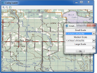
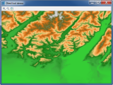
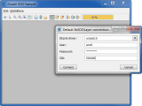
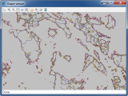
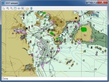
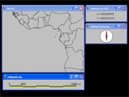
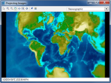
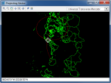
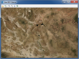
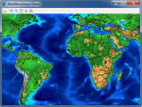

This directory contains samples related to the Rogue Wave Views Maps package.
| CADRG Viewer | |
|  | CADRG Viewer with Load-On-Demand implementation. |
| DTED Viewer | |
|  | DTED Viewer with Load On Demand implementation. |
| Rogue Wave Views Maps Oracle SDO Sample | |
|  | This sample shows how you can use Views Maps with Oracle Spatial, also known as Oracle SDO (Spatial Data Option). |
| Rogue Wave Views Maps Shapefile Sample | |
|  | This sample shows how to load Shapefile data. |
| Rogue Wave Views Maps S57 Sample | |
|  | This sample shows how to load S57 data. |
| Gui Component Presentation | |
|  | Showing scale, a compass and a coordinate viewer. |
| Projecting an Image | |
|  | Projects an image of the earth. |
| Projecting Vectors | |
|  | Projects a vector representation of the earth. |
| GeoTIFF Viewer and Tiler | |
|  | GeoTIFF viewer with Load-On-Demand implementation. |
| Multiresolution Shapefile and Image File | |
|  | Multiresolution viewer with Load-On-Demand implementation. |
{kind=link}
{kind=link}
{kind=link}
{kind=link}
{kind=link}
{kind=link}
{kind=link}
{kind=link}
{kind=link}
{kind=link}